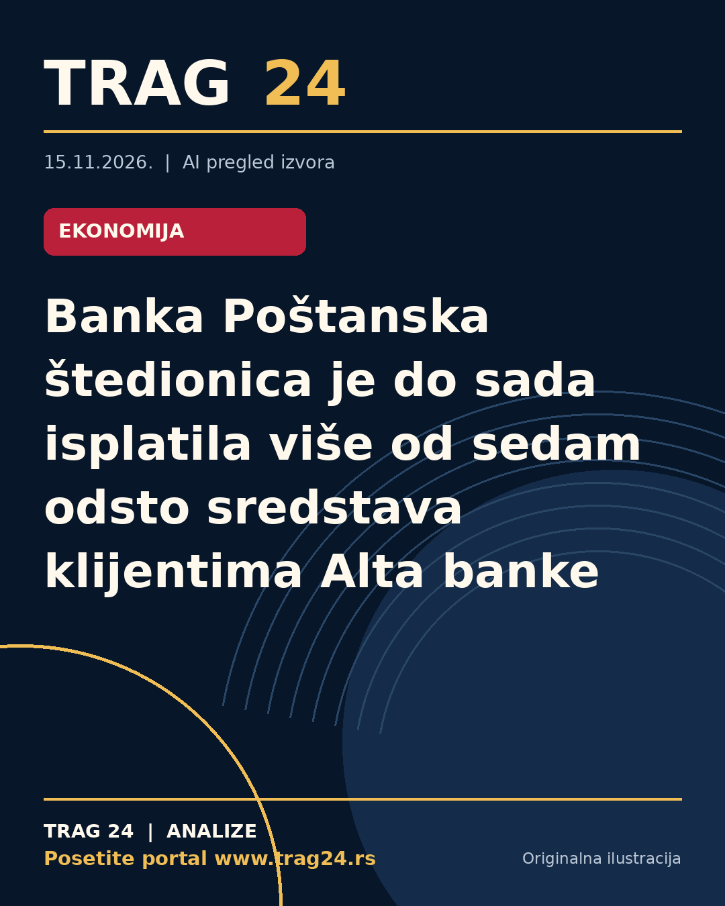

Banka Poštanska štedionica je do sada isplatila više od sedam odsto sredstava klijentima Alta banke

ŠTA SE DOGODILO
Banka Poštanska štedionica nastavila je isplatu osiguranih depozita klijentima ugašene Alta banke. Isplata se vrši iz sredstava obezbeđenih od strane Agencije za osiguranje depozita. Za nepuna dva dana realizovano je više od sedam odsto ukupnih sredstava namenjenih za isplatu u dinarima i evrima.
HRONOLOGIJA
Početak isplate zabeležen je neposredno pre dva dana. Zaključno sa današnjim presekom, banka je realizovala 7,27 procenata ukupnih depozita namenjenih za isplatu u dinarima i 7,74 procenata u evrima. Tokom ovog perioda klijenti su preko portala banke zakazali 17.789 termina za podizanje novca. Proces isplate traje i nastavlja se prema planu.
ŠTA NAVODE IZVORI
Iz Banke Poštanska štedionica ističu da je zakazivanje termina putem portala omogućilo bolje organizovanje rada ekspozitura, efikasniju uslugu i kraće vreme čekanja. Takođe, klijentima se pruža mogućnost da termin zakažu i preko Kontakt centra banke ili direktno u ekspoziturama. Banka poziva sve korisnike da dolaze u zakazano vreme i da se prethodno informišu o potrebnoj dokumentaciji te o načinu isplate kako bi proces tekao što efikasnije.
ŠTA JE POTVRĐENO
Potvrđeno je da je Banka Poštanska štedionica počela i nastavlja isplatu osiguranih depozita klijentima Alta banke. Potvrđeni su procenti isplate sredstava – 7,27 odsto u dinarima i 7,74 odsto u evrima tokom nešto manje od dva dana. Takođe, potvrđeno je da se isplate vrše iz sredstava Agencije za osiguranje depozita i da je omogućen sistem zakazivanja termina putem internet portala i kontaktnog centra.
ŠTA NIJE POTVRĐENO
Nije potvrđeno koliko ukupno sredstava treba da bude isplaćeno klijentima Alta banke, niti je dostupna detaljnija hronologija isplate ili procena kada će isplata biti završena. Takođe, nisu date informacije o reakcijama klijenata ili eventualnim problemima prilikom isplate.
ŠTA OSTАJE OTVORENO: Ostaje nejasno koliki je ukupni iznos obaveza prema klijentima Alta banke i kojom dinamikom će isplata ići dalje nakon početnih dana. Takođe, nije poznato kako će se dalje odvijati ceo proces, da li će biti promena u načinu isplate ili eventualnih dodatnih mera. Zainteresovani klijenti pozvani su da prate zvanične informacije Banke Poštanska štedionica za dalje instrukcije.
Izvori
- https://biznis.telegraf.rs/info-biz/4433211-banka-postanska-stedionica-isplaceno-vise-od-7-odsto-sredstava-klijentima-alta-banke
- https://insajder.net/prenosimo/banka-postanska-stedionica-isplaceno-vise-od-sedam-odsto-sredstava-klijentima-alta-banke
Ova analiza je pripremljena uz pomoć veštačke inteligencije na osnovu javno dostupnih izvora. Navodi izvora nisu nužno nezavisno potvrđeni.